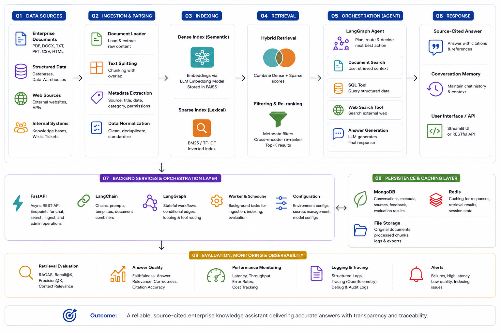

Enterprise RAG Knowledge Assistant
A source-cited enterprise knowledge assistant that combines dense and sparse retrieval, re-ranking, metadata filtering, structured SQL access, agent orchestration, conversation lineage, caching, and evaluation.
View GitHub repositoryWhat it does
- Ingests and indexes more than 2,000 documents for enterprise question answering.
- Combines FAISS dense retrieval with BM25 sparse retrieval to capture semantic meaning and exact terminology.
- Applies metadata filtering and re-ranking before context is passed to the language model.
- Uses LangGraph to route requests between document retrieval, structured SQL lookup, and web search.
- Returns source-cited answers and stores conversation lineage for traceability.
- Evaluates retrieval quality, answer accuracy, and latency against a repeatable test set.
Architecture
The system separates ingestion, indexing, retrieval, orchestration, generation, persistence, and evaluation. That makes weak answers diagnosable instead of treating the application as one opaque prompt.

What I built
Document ingestion. The ingestion pipeline parses files, creates retrieval-sized chunks, retains source metadata, and assigns identifiers that trace each answer back to the original document.
Hybrid retrieval. Dense retrieval handles semantic similarity while BM25 protects exact terms, abbreviations, product names, and domain-specific language.
Filtering and re-ranking. Metadata filters narrow the candidate set and re-ranking improves the order of evidence before generation.
Agent workflow. LangGraph coordinates document retrieval, SQL lookup, and web search as explicit tools with separate responsibilities.
Backend and state. FastAPI exposes asynchronous endpoints, MongoDB stores conversation and retrieval lineage, and Redis reduces repeated-query latency.
Evaluation results
| Measure | Result | What it showed |
|---|---|---|
| RAGAS context recall | +14 pp | Hybrid retrieval improved evidence selection over the dense-only baseline. |
| Evaluated Q&A accuracy | ~87% | The assistant answered most prepared test questions correctly with supporting context. |
| p95 response latency | ~2 sec | The complete application workflow remained responsive under evaluation. |
Reliability and system design
- Conversation lineage records which documents and tools supported each response.
- Redis caching prevents repeated requests from triggering unnecessary retrieval and generation work.
- Metadata filters reduce cross-document contamination across domains and document types.
- Tool routing keeps document search, SQL access, and web search separate and inspectable.
- Evaluation datasets make retrieval and prompt changes measurable before they are accepted.
Why it stands out
Many RAG demonstrations stop after embedding a few PDFs and placing a chat interface on top. This system treats retrieval, evidence, orchestration, latency, state, and evaluation as engineering problems.
The main result is not simply that the assistant can answer questions. It is that the answer path can be inspected, evaluated, reproduced, and improved when the system fails.
How I think about this kind of work
- Better retrieval is often more valuable than a more complicated generation prompt.
- Exact terminology and semantic similarity require different retrieval methods, which is why hybrid search matters.
- An enterprise assistant should show evidence and preserve lineage rather than ask users to trust an unsupported response.
- Agent tools should have explicit responsibilities, inputs, outputs, and failure behavior.
- AI systems should be evaluated against repeatable test cases before changes are treated as improvements.